Define measures 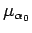 and 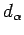 by their Fourier transforms: 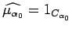, and 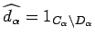. Then we have the following decomposition theorem.
| (32) | 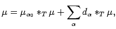 |
| (33) |  |
The next result, crucial to our proof of Theorem 5.1, is already known in the case that 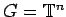 with the lexicographic order on the dual. This is due to Garling [15], and is a modification of the celebrated inequalities of Burkholder. Our result can be obtained directly from the result in [15] by combining the techniques of [3] with the homomorphism theorem 4.5. However, we shall take a different approach, in effect reproducing Garling's proof in this more general setting.
Now let us show that if we have the result for compact  , then
we have it for locally compact
, then
we have it for locally compact  .
Let
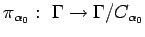 denote the quotient homomorphism
of
.
Let
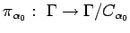 denote the quotient homomorphism
of  onto the discrete group
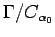
(recall that
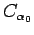 is open),
and define a measurable order on
to be
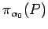.
By Remarks 2.2 (c),
the decomposition of the group
that we get
by applying Theorem 2.1
to that group, is precisely the
image by
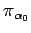 of the decomposition of the group
onto the discrete group
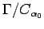
(recall that
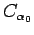 is open),
and define a measurable order on
to be
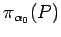.
By Remarks 2.2 (c),
the decomposition of the group
that we get
by applying Theorem 2.1
to that group, is precisely the
image by
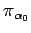 of the decomposition of the group  .
Let denote the
compact dual group of
. Thus if
Theorem 5.2 holds for 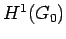, then
applying Theorem 4.5, we see that
Theorem 5.2 holds for
.
Let denote the
compact dual group of
. Thus if
Theorem 5.2 holds for 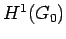, then
applying Theorem 4.5, we see that
Theorem 5.2 holds for  .
.
Henceforth, let us suppose that  is compact.
We will suppose that the Haar measure on
is compact.
We will suppose that the Haar measure on  is normalized, so
that
is normalized, so
that  with Haar measure is a probability space.
with Haar measure is a probability space.
Since each one of the subgroups 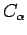, and
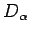 (
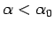) is open, it follows that
their annihilators in  ,
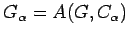, and
,
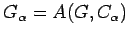, and
 , are compact.
Let
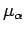 and
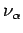 denote
the normalized Haar measures on
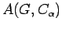
and
, are compact.
Let
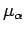 and
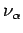 denote
the normalized Haar measures on
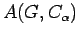
and
 , respectively.
We have
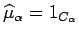 (for all
, respectively.
We have
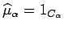 (for all
 ),
and
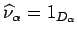
(for all
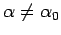), so that
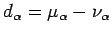.
),
and
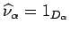
(for all
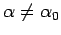), so that
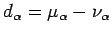.
For each  ,
let
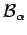 denote the
,
let
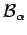 denote the
 -algebra of subsets of
-algebra of subsets of  of the form
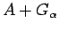, where
of the form
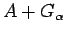, where  is a Borel subset of
is a Borel subset of  .
We have
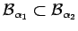, whenever
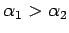.
It is a simple matter to see that for
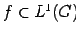, the conditional expectation of
.
We have
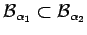, whenever
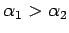.
It is a simple matter to see that for
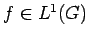, the conditional expectation of
 with respect to
is equal to
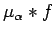
(see [11, Chapter 5, Section 2]).
with respect to
is equal to
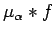
(see [11, Chapter 5, Section 2]).
We may suppose without
loss of generality that
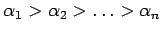.
Thus the  -algebras
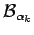 form a filtration, and the
sequence
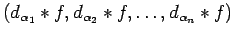
is a martingale
difference sequence with respect to this filtration.
-algebras
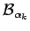 form a filtration, and the
sequence
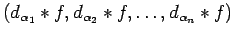
is a martingale
difference sequence with respect to this filtration.
In that case, we have the following result
of Burkholder [7, Inequality (1.7)], and [8]. If
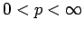, then there is a positive constant  , depending only
upon
, depending only
upon  , such that
, such that
Next, by convolving
with an approximate identity
for
consisting of trigonometric
polynomials, we may assume
that  is a
trigonometric polynomial.
Then we see that for each that
the function
,
, is
in
. To verify this, it is sufficient
to consider the case when
is a
trigonometric polynomial.
Then we see that for each that
the function
,
, is
in
. To verify this, it is sufficient
to consider the case when
 is a character in . Then
is a character in . Then
Now we have the following generalization of Jensen's Inequality, due to Helson and Lowdenslager [16, Theorem 2]. An independent proof based on the ideas of this section is given in [3]. For all
 |
Let us continue with the proof of Theorem 5.2.
We may suppose that  is a mean zero
trigonometric polynomial, and that
the spectrum of
is a mean zero
trigonometric polynomial, and that
the spectrum of  is contained in
, that is to say
is contained in
, that is to say
Proof of Theorem 5.1.
Transferring inequality (34) by using Theorem 1.8, we obtain that
for any set
of indices
less than , and
for any numbers
(
),
there is a positive constant  , depending only upon the
representation
, depending only upon the
representation  , such that
, such that
| (41) |
Now suppose that
is a countable collection of
indices less than .
Then by Bessaga and Pe czynski [5], the series
is unconditionally convergent.
In particular, for any , for only finitely many
czynski [5], the series
is unconditionally convergent.
In particular, for any , for only finitely many  do we have
that
. Since this is true for all
such countable sets, we deduce that the set of
do we have
that
. Since this is true for all
such countable sets, we deduce that the set of  for which
is countable.
for which
is countable.
Hence we have that
is unconditionally convergent
to some measure, say  .
Clearly
.
Clearly  is weakly measurable. To prove that
, it is enough by Proposition 1.4 to show that
for every
, we have
for almost all .
is weakly measurable. To prove that
, it is enough by Proposition 1.4 to show that
for every
, we have
for almost all .
We first note that since for every
the series
converges to  in , it follows that, for every
,
the series
converges to in the weak-* topology of
.
Now on the one hand, for and
, we have
,
because of the (unconditional) convergence of
the series
to
in , it follows that, for every
,
the series
converges to in the weak-* topology of
.
Now on the one hand, for and
, we have
,
because of the (unconditional) convergence of
the series
to  .
On the other hand, by considering the
function
.
On the other hand, by considering the
function
 , we have that
,
weak *. Thus
for almost all , and the
proof is complete.
, we have that
,
weak *. Thus
for almost all , and the
proof is complete.